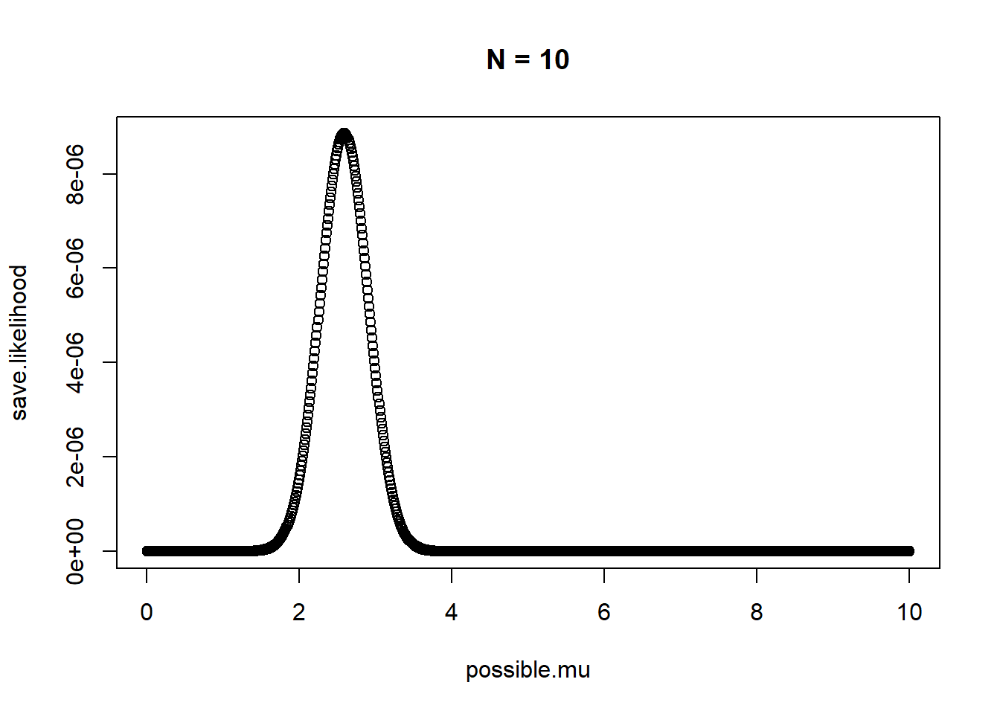
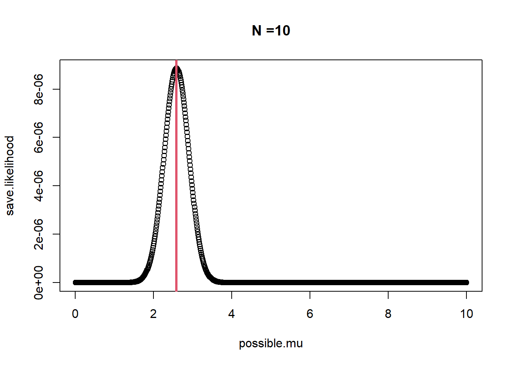
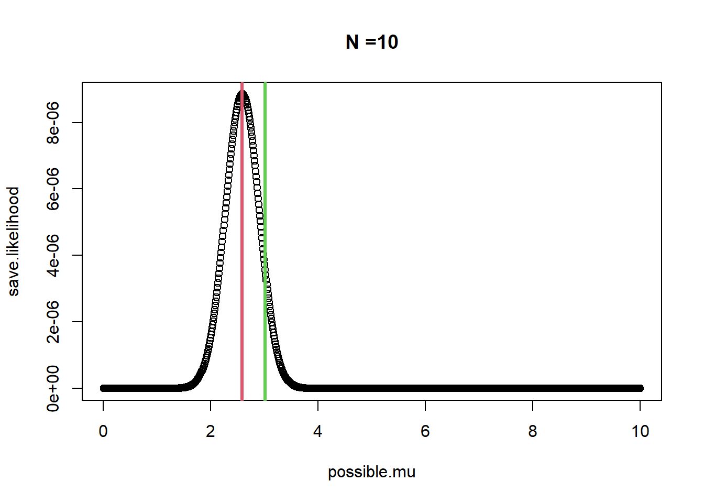
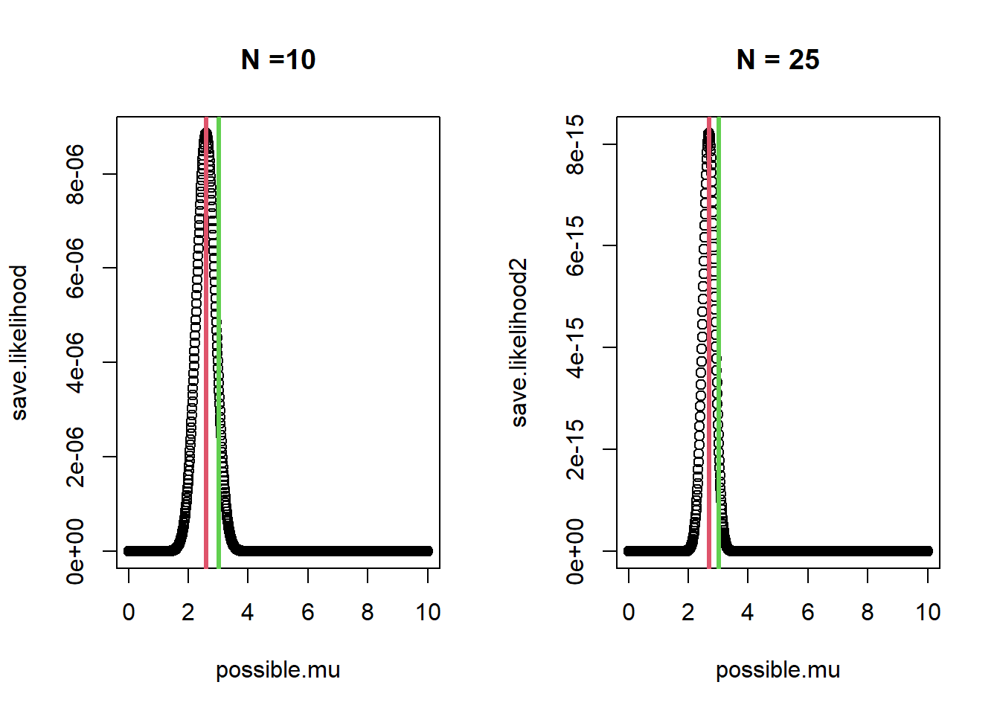
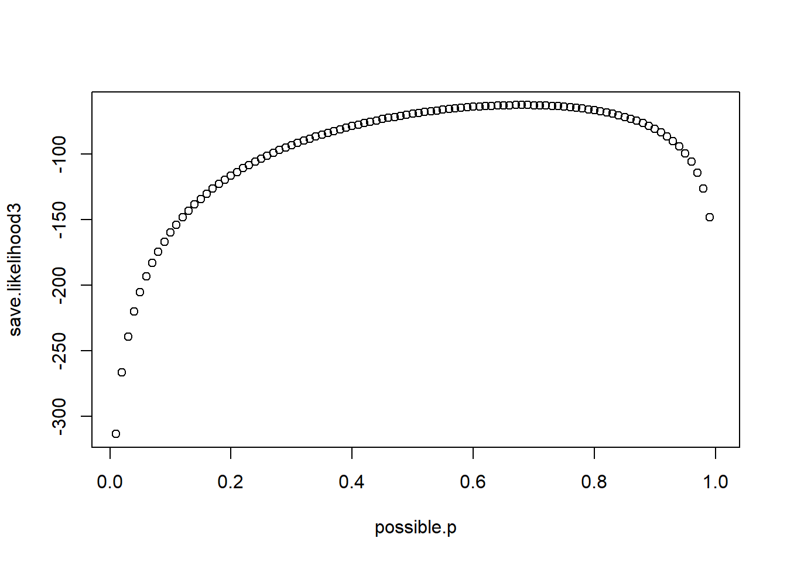

Likelihood and MLE
Example 1 (Gaussian Distribution)
The Setup
The goal is to introduce the idea of the likelihood function and maximum likelihood estimate.
Here is the true population of mongoose weights (lbs). “Population” indicates that this is the complete set of all weigth values that exist for however a ‘population’ is being defined. We don’t usually get to see the true population, but only a single sample
weights = c(3.5948031, 2.9389464, 2.3039952, 4.4335746, 3.2380551, 5.9372273, 2.1879513, 4.6909930, 4.8180454, 2.6620834,
2.6278748, 1.8681733, 1.7627187, 1.9559691, 3.2443797, 2.7432778, 4.1115911, 1.7454118, 2.9869501, 0.872889,
3.7688900, 3.1523219, 3.3175419, 3.4007622, 3.2842763, 1.1695005, 3.2339664, 2.5641397, 3.0828627, 1.491542,
3.7889264, 3.0619933, 1.9634965, 3.7793706, 4.0577525, 3.5826062, 2.8607450, 2.1597275, 3.4563558, 2.8209301
)What is the population mean?
mean(weights)[1] 3.018065How many indivdiauls are in this population?
length(weights)[1] 40The Sample
Lets take a random sample. In this sample we only get to observe 10 individual’s weights
We now want to estimate the population mean (\(\mu\)) from our sample. Lets consider possible values that the mean could take. For now, we will ignore estimating the sample variance (\(\sigma\)) by fixing it to 1. We come back to this below.
possible.mu = seq(0.01,10,0.01)
sigma1 = 1That’s a lot of possible \(\mu\), but still not all the possible mu, right?
Brute force optimization (single parameter)
Now, let’s do a brute force search of lots possible values of the population mean where we assume \[ y \sim \text{Normal}(\mu, \sigma=1) \]
We will calculate the likelihood (product of the probability density for a given value of \(\mu\)). We can do this by searching over different values of \(\mu\), where we want to evaluate the value of \(\mu\) that maximizes the probability of observing the data. Or, more simply, we want to get the likelihood of the data and find the maximum value.
# Create an object to store the likelihood value for each possible.mu
save.likelihood = rep(0, length(possible.mu))
# Next, loop over possible.mu values and calculate the likelihood of the data
for(i in 1:length(possible.mu)){
save.likelihood[i] = prod(
dnorm(sample.weights, possible.mu[i], sigma1)
)
}Now, lets visualize the likelihood for each value of \(\mu\) by \(\mu\).
plot(possible.mu,save.likelihood, main="N = 10")
To find the maximum liklihood estiamte of \(\mu\), we first need to find the index of the the maximum likelihood value
which.max(save.likelihood)[1] 259Not, extract the maximum likelihood value and plot it

This is our best estimate of \(\mu\) - the population mean of mongoose weights:
mle[1] 2.59More elegant optimization (single parameter)
Now, lets get fancy and use an optimization algorithm, which will be more accurate than our brute force search.
Specifcally, we will use the optimize function in stats package. This function will aim to minimize any function that you provide it.
First, we need to specify our likelihood function. Note the “-1” which will mean we will find the maximum likeihood value by actually finding the minimum likelihood value
$minimum
[1] 2.593456
$objective
[1] -8.85375e-06The best estimate is what? Is it similar to our brute force search that is the mle object?
Let’s help out the algorithim. Taking products can cause issues when values get really small. Computers don’t like really small or really large numbers. So, let’s change this to summing the log of the probability densities. This is not an issue here, but is with more complex models.
$minimum
[1] 2.593452
$objective
[1] 11.63467Note how our objective value changed, but we get the same mle.
glm comparison
Let’s compare our estimates with using the glm function
glm.out = glm(sample.weights~1,family=gaussian)
glm.out$coefficients(Intercept)
2.593452 Is the same value as in the brute force and our fancy optimization?
What about the sample mean?
mean(sample.weights)[1] 2.593452If we get the same answer, why should we bother with finding the mle via optimization?
The answer is many reasons. First, we can estiamte the sample variance as well (below). Second, because for most statistiacl models, we will need a general process to estimate parameters because we are interested in parameters beyond a single mean.
mle vs. truth

Consider the difference between the mle and truth. Is our estimate (mle) biased?
No, this is not statisical bias. Only estimators can be biased. What is it called then? It is actually not a bad thing. It is an expected property of a sample.
The mle and more data
Lets investigate how the likelihood changes when the data changes.
Lets now sample 25 (out of 30) mongoose randomly and brute force the likelihood profile
Lets plot the likelihood profile using the two data sets

What is the most noticable difference? The spread, right?
Let’s measure the variation of the likelihood
The likelihood profile is more precise with more data! The width (variation) of the likelihood profile holds information about the uncertainty of our parameters. This is where we are getting measures of standard error.
Brute force optimization (two parameters)
Above, we ignored \(\sigma\). Now, lets jointly estimate it with \(\mu\).
This requires us to find the joint likelihood of both parameters simultanesouly.
# Find all possible combinations of mu and sigma
possible.combs=expand.grid(possible.mu,possible.sigma)
head(possible.combs) Var1 Var2
1 0.01 0.5
2 0.06 0.5
3 0.11 0.5
4 0.16 0.5
5 0.21 0.5
6 0.26 0.5# New storage object
save.likelihood=rep(0, dim(possible.combs)[1])
# loop over each combination of both possible mu and sigma, calculating the joint likelihood of the data
for(i in 1:length(save.likelihood)){
save.likelihood[i]=sum(dnorm(sample.weights,
possible.combs[i,1],
possible.combs[i,2],
log=TRUE)
)
}
# Maximum likelihood value
save.likelihood[which.max(save.likelihood)][1] -10.61581# mle for mu and sigma
possible.combs[which.max(save.likelihood),] Var1 Var2
373 2.61 0.7# Let's plot the 3d likelihood surface
# First we need cool colors- create a vector or rainnow colors
cols <- rainbow(10000)[as.numeric(cut(save.likelihood,breaks = 10000))]
# Now find the values that are > -20, which is near the mle and make them black to stand out visually
cols[which(save.likelihood>-20)]="black"
# What is the index for the mle and then turn it white
which.max(save.likelihood)[1] 373 cols[373]="white"
# Create the 3D plot
rgl::plot3d(possible.combs[,1],possible.combs[,2],save.likelihood,xlab="mu",ylab="sigma",col=cols,size=10)Fancy optimization (two parameters)
Define the likelihood function that we want to minimize
Example 2 (Bernoulli Distribution)
The Setup
Now for another MLE example, but this time with survival data (1= survive, 0 = dead).
Imagine a GPS tracking study that you record whether an animal survived the winter or died. 0 and 1 data don’t make sense to use the Normal distribution. We will use the Bernoulli likelihood.
Let’s first define two functions to use, the logit and expit functions. The logit function maps probabilities to the real number line and then the expit function maps the real number line estimates back to probabilities. These are the same as the function, qlogis and plogis in the stats package
The Sample
survival.data=c(1, 1, 0, 1, 0, 0, 0, 1, 1, 1, 1, 1, 1, 1, 1, 0, 1, 0, 0, 1, 1, 0, 1, 0, 1, 1, 1, 1, 1, 1, 0, 0, 0, 1, 1, 0, 0,
1, 1, 1, 0, 1, 1, 1, 0, 1, 1, 0, 1, 1, 1, 1, 1, 0, 1, 1, 1, 1, 0, 1, 0, 1, 1, 1, 1, 0, 0, 0, 1, 0, 1, 1, 1, 1,
0, 1, 1, 1, 1, 1, 1, 1, 1, 0, 1, 1, 1, 1, 1, 0, 1, 0, 1, 0, 1, 1, 0, 1, 0, 0)Brute force optimization
We need to consider all the possible survival probabilities
possible.p = seq(0.01,1,0.01)Next, create a storage object and loop over all possible.p with the survival data and find the parameter that is most likely, given the data
Lets look at the likelihood profile
plot(possible.p,save.likelihood3)
What is the mle?
possible.p[which.max(save.likelihood3)][1] 0.68Fancy optimzation
$minimum
[1] 0.6800076
$objective
[1] 62.68695Do you get the same or similar answer?
glm comparison
Compare our above estimates to fitting a logistic regression model with the glm function.
Call:
glm(formula = survival.data ~ 1, family = "binomial")
Coefficients:
Estimate Std. Error z value Pr(>|z|)
(Intercept) 0.7538 0.2144 3.516 0.000438 ***
---
Signif. codes: 0 '***' 0.001 '**' 0.01 '*' 0.05 '.' 0.1 ' ' 1
(Dispersion parameter for binomial family taken to be 1)
Null deviance: 125.37 on 99 degrees of freedom
Residual deviance: 125.37 on 99 degrees of freedom
AIC: 127.37
Number of Fisher Scoring iterations: 4Where is the predicted probability of survival (y==1)? Well, ee need to backtransform out estimate take the inverse-logit of the beta coefficient.
expit(glm.logisitic$coefficients[1])(Intercept)
0.68 Or, we can ask R to do it for us. We only need the first prediction, as they are all the same under this model
predict(glm.logisitic,type = "response")[1] 1
0.68